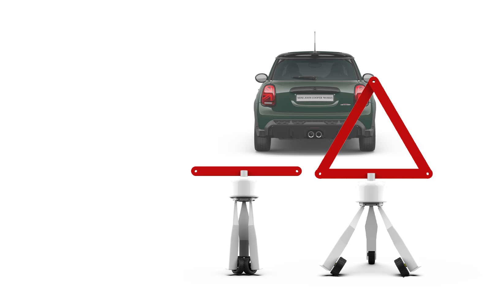

Publication: 이성호, and 이희승. "원격 조종이 가능한 안전 삼각대." 한국디자인학회 학술발표대회 논문집 (2018): 152-153.

The vehicle should carry a basic emergency kit containing. It is a legal requirement that drivers carry a red warning triangle in case
of break- down or accident. In case the vehicle cannot be moved from the middle of the road, use flashing indicators and put a
warning triangle behind the vehicle.